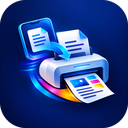

XeoGoPrivacy
For the XeoGo website and the XeoGo and XeoGo Staff apps. Last changed: 13 November 2026.
XeoGo lets you send files to the college Xerox center, pay for the printing, and collect your prints. It keeps only what it needs for that, and deletes it as soon as it is not needed any more.
What is kept, and for how long
- Your files (PDFs, Word files, pictures): kept on the Xerox center's computer only until they are printed, then deleted. Files of an order that is never paid are deleted within a day.
- A small picture of each file's first sheet, so the staff can hand you the right pages: deleted when the order is handed over.
- The order: file names, the settings you chose (pages, copies, colour, paper), the price, and the times (ordered, paid, printed, collected). Kept so the shop can answer questions and keep its accounts.
- Payment: the amount and the reference of the payment (UPI reference, or Razorpay's payment ID). XeoGo never sees your card, bank account, UPI PIN or login: you pay in your own UPI app or on Razorpay's page.
- Staff app only: your name and username as the Xerox center entered them, and how many free pages you used each month.
XeoGo does not ask for your name, phone number or email to print (students need no account). It does not use your location, contacts, camera or messages, shows no ads, and does not track you across other apps or websites.
Who can see it
Only the Xerox center's staff, through the counter screen, to print and hand over your order. Nothing is sold or given to anyone else. Payments go through your UPI app's bank or through Razorpay, under their own privacy rules.
Where it is kept
On the Xerox center's computer. A backup of the order records (never the files) is made every half hour and kept up to 45 days, on that computer and in the shop's own cloud storage. Everything travels encrypted (https) between your phone and the center.
On your phone
The app keeps your unfinished order and your recent orders on your phone so you can come back to them. Uninstalling the app, or clearing the website's data in your browser, removes them.
Questions, or to have an order deleted
Ask at the Xerox center's counter. They can look up and delete an order.